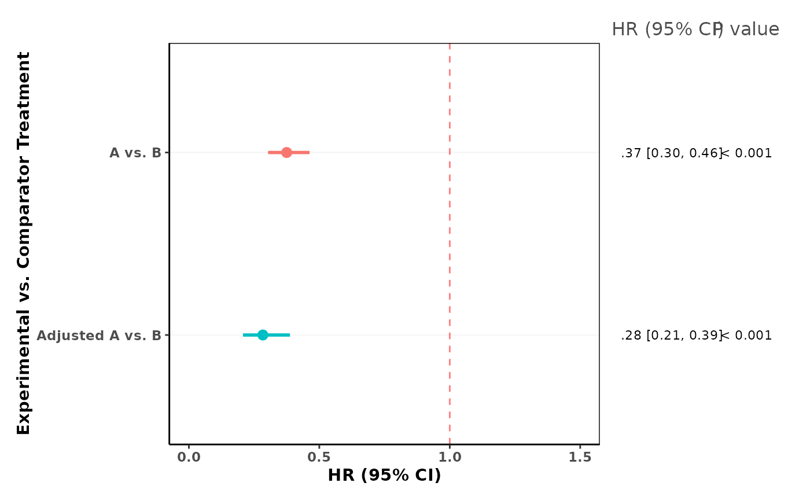

This function compiles effect estimates (and their confidence intervals) from one or more
"MAIC objects" – typically the output from maic_anchored() or maic_unanchored() functions –
and creates a forest plot alongside a summary table of those effect estimates.
Usage
maic_forest_plot(..., xlim = c(0, 1.5), reference_line = 1)Arguments
- ...
One or more MAIC objects. Each object must contain an
inferential$summarydata frame with the columns"HR","OR", or"RR"(one of these must be present), along with"LCL","UCL","pval", and acaseidentifier column.- xlim
A numeric vector of length two, specifying the limits of the effect-size axis in the resulting forest plot. Defaults to
c(0, 1.5).- reference_line
A numeric value specifying where to draw the "no-effect" reference line on the forest plot. Defaults to
1.
Value
A patchwork object that combines:
A forest plot of the provided effect estimates and their 95\
A corresponding table listing each estimate in numeric form, along with the p-value.
Printing or plotting this returned object will display both the forest plot and the summary table.
Details
This function extracts the effect estimates (e.g., HR, OR, or RR) and their confidence intervals
from each provided MAIC object. It then stacks all estimates into a single data frame for plotting.
A forest plot is generated using ggplot2 with vertical error bars displaying the confidence intervals.
The reference_line is drawn as a dashed line to indicate the null value (usually 1, meaning no difference).
Below the forest plot, a table is constructed showing the point estimate and 95% confidence interval
for each row, along with its p-value. If the p-value is less than 0.001, it is displayed as "< 0.001",
otherwise it is displayed to three decimal places.
Examples
if (requireNamespace("ggplot2") && requireNamespace("patchwork")) {
data(centered_ipd_sat)
data(adtte_sat)
data(pseudo_ipd_sat)
centered_colnames <- c(
"AGE",
"AGE_SQUARED",
"SEX_MALE",
"ECOG0",
"SMOKE",
"N_PR_THER_MEDIAN"
)
centered_colnames <- paste0(centered_colnames, "_CENTERED")
weighted_data <- estimate_weights(
data = centered_ipd_sat,
centered_colnames = centered_colnames
)
result <- maic_unanchored(
weights_object = weighted_data,
ipd = adtte_sat,
pseudo_ipd = pseudo_ipd_sat,
trt_ipd = "A",
trt_agd = "B",
normalize_weight = FALSE,
endpoint_name = "Overall Survival",
endpoint_type = "tte",
eff_measure = "HR",
time_scale = "month",
km_conf_type = "log-log"
)
maic_forest_plot(result)
}
#> Loading required namespace: patchwork
